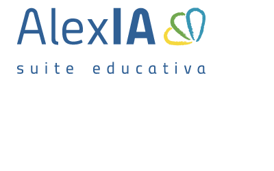

Para la implementación del Plan de Transformación Digital se utilizará una plataforma de gestión escolar con base de datos centralizada, que integrará los tres procesos del centro educativo en un solo sistema digital: gestión documental, comunicación con las familias y gestión informática.

El plan se despliega desde junio de 2026 hasta noviembre de 2026, con etapas bien definidas que permiten una implantación ordenada y sin interrumpir el funcionamiento del centro.
| Periodo | Proceso | Descripción | Estado |
|---|---|---|---|
| Junio 2026 | Planificación e implementación de la gestión informática | Planificación del proyecto y selección de herramientas digitales. Implementación del sistema de gestión informática para controlar incidencias técnicas, el inventario de equipos y el mantenimiento del material tecnológico del centro. | Finalizada |
| 1–25 Julio 2026 | Gestión de la plataforma digital | Los técnicos de TIC crean las credenciales de uso para los padres, implementación de firma digital, comprobación de que la plataforma digital implemente nuevos softwares como ViDSigner. | Desarrollo |
| 25–31 Julio 2026 | Inicio de curso y apoyo a familias | Secretaría enviará de forma masiva los usuarios y contraseñas de la app Alexia a todos los progenitores. | Finalizada |
| Agosto 2026 | Pausa del proyecto | Durante el mes de agosto no se realizaron implementaciones importantes debido al periodo vacacional del personal del centro. Solo se realizarán revisiones técnicas básicas si fuera necesario. | Pausa |
| Septiembre 2026 | Comunicación digital con las familias | Con el inicio del nuevo curso se pondrá en marcha la plataforma digital para mejorar la comunicación con las familias, permitiendo enviar avisos, circulares y notificaciones de forma rápida y reduciendo el uso de papel. | Finalizado |
| 1–10 Sep. 2026 | Formación del profesorado | Durante la primera semana de septiembre se dará formación a todos los profesores de la escuela sobre las nuevas implementaciones de software, además de resolver dudas y atender sus cuestiones. | Formación |
| 10–30 Sep. 2026 | Resolución de dudas — alumnos | Se resolverán dudas relacionadas con las credenciales, aplicaciones o cualquier otro problema que surja con los correos mandados anteriormente, además de otras cuestiones del departamento. | En curso |
| Octubre 2026 | Gestión documental digital | Google Drive para el trabajo colaborativo de los profesores, pero toda la documentación oficial y expedientes residirán exclusivamente en Alexia para mayor seguridad y centralización. | Finalizado |
| Noviembre 2026 | Evaluación y seguimiento | Se realizará una evaluación del funcionamiento de las nuevas herramientas digitales, recogiendo opiniones del personal del centro y aplicando mejoras si es necesario. | Finalizada |
Para la implementación del PTD se utilizará una plataforma de gestión escolar con base de datos centralizada, que permitirá integrar los tres procesos del centro en un solo sistema digital, evitando duplicidad de información.
| Apartado | Recursos tecnológicos | Recurso humano | Cómo se integra en la plataforma |
|---|---|---|---|
| Gestión Documental Alexandra |
Ordenadores para personal administrativo, conexión a internet y Ecosistema Alexia (Gestión Documental Integrada) para almacenamiento centralizado de expedientes académicos, facturación y documentación oficial con validez legal. | Un equipo de 3 personas del personal administrativo encargado de digitalizar documentos y gestionar los expedientes dentro de la plataforma, supervisados por un responsable TIC. | Los documentos digitalizados se almacenan en la base de datos central de la plataforma, accesibles para todos los módulos que los necesiten (por ejemplo, Comunicación con familias). |
| Comunicación con Familias Diego |
Dispositivos móviles o tablets para profes, conexión WiFi de alta intensidad, plataforma ALEXIA de comunicación escolar (firma digital, boletines). | Tutores para gestionar notas y progresos; apoyo del equipo de Gestión Documental; técnico TIC para soporte. Plan de formación a los profes a cargo del TIC. | El módulo de comunicación usa la misma base de datos para enviar documentos y avisos ya digitalizados por Gestión Documental, evitando duplicar información. |
| Gestión Informática Óscar P. |
Servidores para instalar servicios, herramientas GLPI (gestión de incidencias), Zabbix (monitorización), OCS Inventory (inventario digital). | Administradores de sistemas y técnicos que se encarguen del mantenimiento y resolución de incidencias. En total, un equipo de 4 técnicos. | Este módulo controla los equipos y servicios que soportan la plataforma central, asegurando que la base de datos y todos los módulos funcionen correctamente y estén siempre disponibles. |
Una inversión planificada en dos fases: inversión inicial el primer año y coste de mantenimiento recurrente a partir del segundo año.